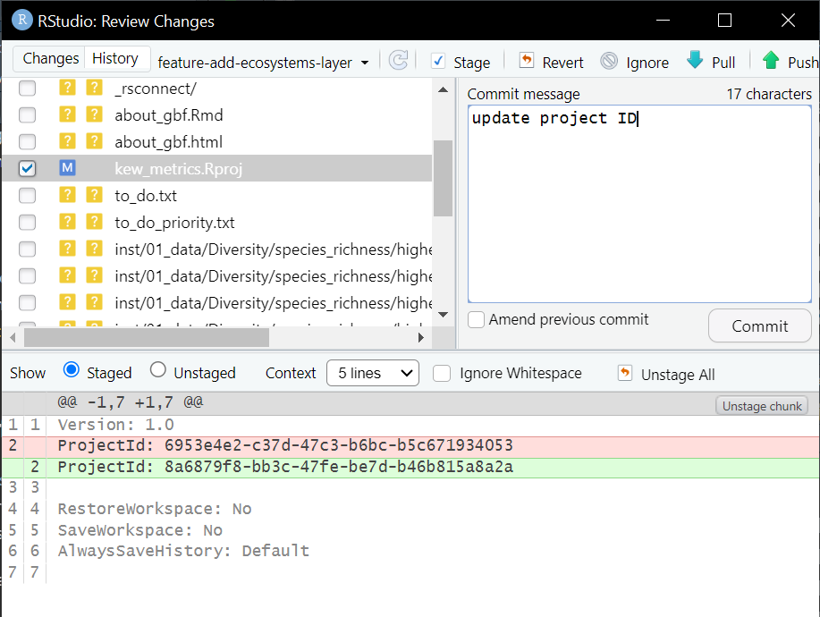

Kew Metrics - app maintenance
Workflows for developing and deploying Kew Metrics app
Kew Biodiversity Metrics (https://spbachman.shinyapps.io/kew_metrics/) has been developed as a proof-of-concept website. The aim to make Kew’s plant and fungi biodiversity metrics accessible from a single interactive website. The aim is to secure additional funding to develop a production ready version of this website as part of Kew’s suite of science websites.
The initial app development was supplemented with a small amount of development time from Jumping Rivers digital agency (March 2025). The app is now build in the package structure and employs modules to make
Source files
The code underlying the website is here:
https://github.com/stevenpbachman/kew_metrics
The current maintainer is Steven Bachman (s.bachman@kew.org)
The github pages include instructions on how to install and run the app locally. The following guidelines and workflows are for developing the code, updating github and deploying the app on shinyapps.io
Structure of the repository:
R/: Contains R scripts that define the server and UI components of the Shiny application, as well as the modules that help build the relevant sections of the package.
inst/: Used in R packages to store external files. This includes the ‘about’ files, data preparation, images, and some of the data files used for the package.
man/: Houses documentation files in the form of
.Rdfiles, which provide detailed descriptions of the functions and datasets included in the package.tests/: Contains test scripts to ensure the functions and features of the application work as intended, following the R testing framework.
app.R: The main entry point for the Shiny application. Running this script launches the app, integrating the UI and server components.
DESCRIPTION: Provides metadata about the project, including its title, description, authors, and dependencies.
NAMESPACE: Specifies the functions and objects that are exported from the package, making them accessible to users.
RStudio and Github
When you set up version control in an R project it will allow you to save snapshots of your code locally using ‘git’. A ‘commit’ is a bit like saving a document, a new version is created and stored locally. Github is a place where you can make a copy of your code in a ‘remote repository’, so that you can access it any time. A remote respository (‘repo’) is like a live backup of your code. To keep things synchronised, you can ‘push’ your commits from your local repository to the remote repository. All of this can be achieved in RStudio.
Branches
A branch is way to replicate the main code and use that as a place to safely develop new code. Usually there is a ‘main’ branch which is the top set, and then other branches for development. When developing applications like a shiny app or package, as is the case here, there can also be a ‘staging’ branch that can be used to test the latest code before updating the main branch that is used to deploy the app.
New branches are usually developed with the intention of building a new feature, fixing a bug or making new documentation, so they can be formatted as follows:
feature-my-new-feature
bug-fixes-bug-xxx
doc-add-doc-xxx
Branches in RStudio
The branches in RStudio can be controlled by the drop down in the top right of the Git tab e.g. you can select main or staging, or a new development branch. Let’s say we want to add a new feature e.g. add a map to the species richness page. In the git tab there is an icon with connected rectangles, which allows you to create a new branch e.g. ‘feature-add-ecosystems-layer’. Make sure to tick the option to sync with remote.
Now you can develop code in this branch and commit periodically i.e. when a chunk of work is complete or a task is resolved.
A commit can be completed by opening the Diff window (far left button on git tab) and you will see files on the left that have been modified (M) or perhaps deleted (D). Click on to the file to see what the difference are - shown in the window below. Green lines are additions and red lines are deletions. to ‘stage’ the changes, you need to tick the box next to the file - you can stage as many files as you like. Now write a note to explain the changes in the commit message box. Good practice to Pull at this stage to make sure you have the latest versions and then commit to save the changes.
The next step is to Push the changes so that they are picked up in the remote repository. You can check github to make sure this has happened, it should be instant.

When you have completed the merge of your changes from staging to main, you will be asked if you want to delete the branch, For features or bug fixes you will normally want to say yes and delete the branch. The exception is the ‘staging’ branch that you want to keep available for testing.
Useful commands for branches
It is quite easy to make a mess with the branches. Sometimes after merging a development branch on github the local and ‘origin’ branches in RStudio might remain linked to the project, even after a pull. It may be necessary to use bash commands in the terminal.
To remove a branch called ‘feature-add-map’ from the local git repository, run this in your terminal within RStudio:
git branch -d feature-add-mapTo remove a remote branch you can combine with the git fetch with the prune command:
git fetch --pruneIf you delete the staging branch by mistake after a merge* you can use the following commands to select the main branch first, pull any updates and make a new version of staging using checkout:
git checkout main
git pull # Ensure main is up-to-date with remote
git checkout -b staging # Create a new staging branch based on main*I have definitely done this.
Deploying the app
Until resource can be found to incorporate Kew metrics into the Kew’s science infrastructure, the site is being hosted on shinyapps.io
You can deploy the app with the following code in the R console. Normally you will deploy the staging version first and check things are working.
rsconnect::deployApp(appName = "kew-metrics-staging")This will render the website at this address: